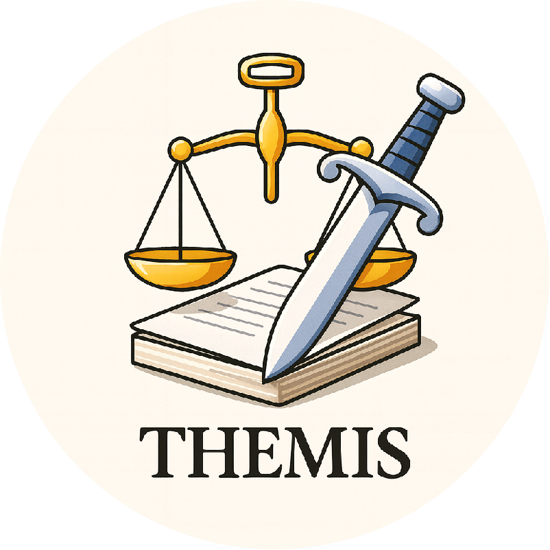

Towards Holistic Evaluation of MLLMs for Scientific Paper Fraud Forensics
Authors: Tzu-Yen Ma1*, Bo Zhang1*, Zichen Tang1, Junpeng Ding1, Haolin Tian1, Yuanze Li1, Zhuodi Hao1, Zixin Ding1, Zirui Wang1, Xinyu Yu1, Shiyao Peng1, Yizhuo Zhao1, Ruomeng Jiang1, Yiling Huang1, Peizhi Zhao1, Jiayuan Chen1, Weisheng Tan1, Haocheng Gao1, Yang Liu1, Jiacheng Liu1, Zhongjun Yang1, Jiayu Huang1, Haihong E1†
1Beijing University of Posts and Telecommunications
* Equal Contribution † Corresponding Author